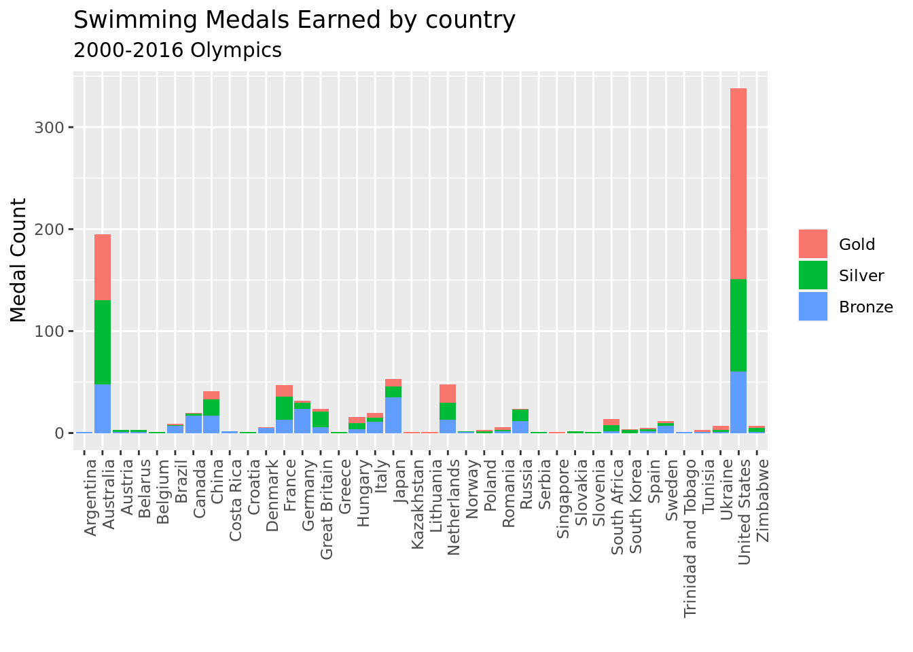
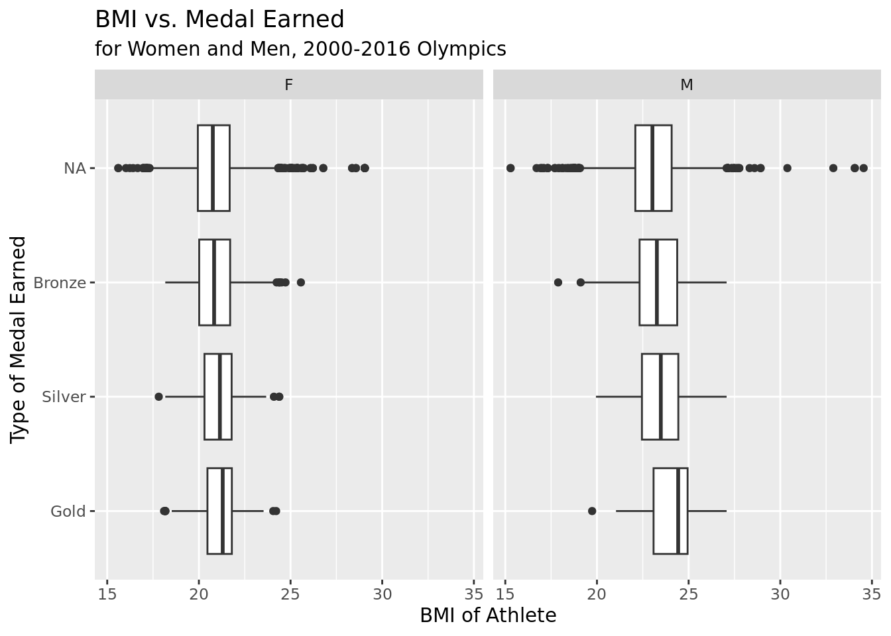
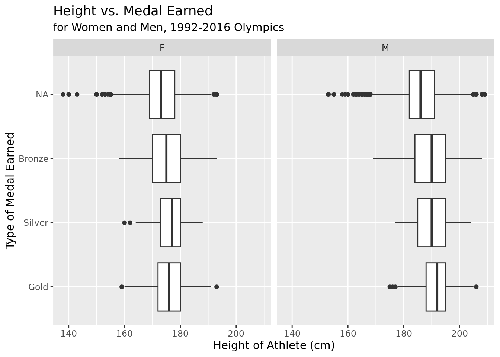
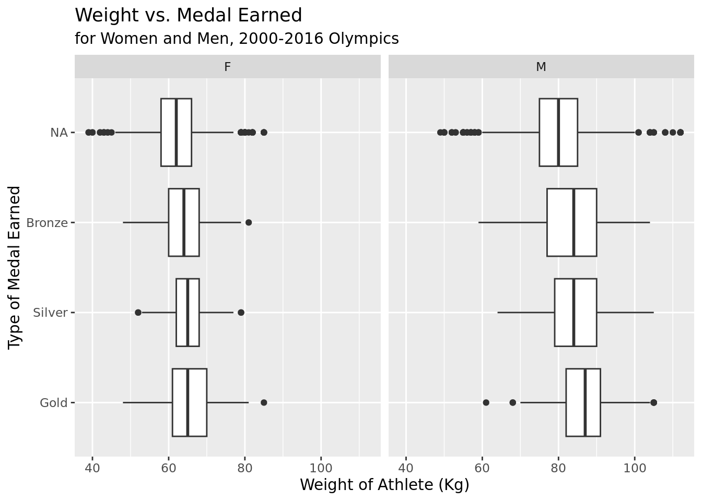
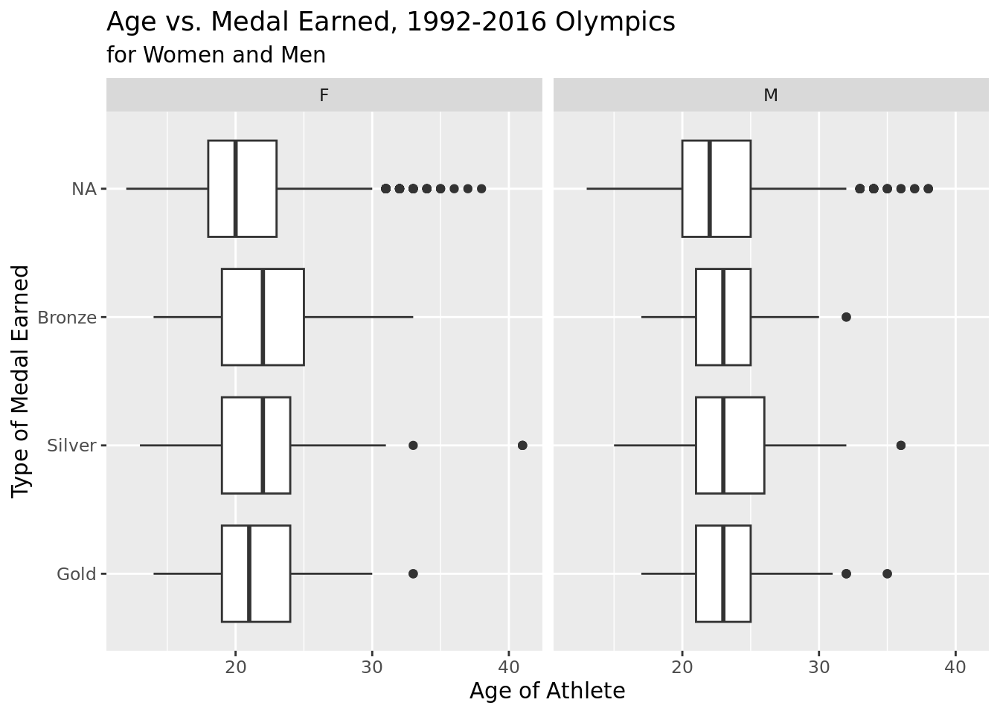

── Attaching packages ─────────────────────────────────────── tidyverse 1.3.2 ──
✔ ggplot2 3.4.0 ✔ purrr 1.0.0
✔ tibble 3.1.8 ✔ dplyr 1.0.10
✔ tidyr 1.2.1 ✔ stringr 1.5.0
✔ readr 2.1.3 ✔ forcats 0.5.2
── Conflicts ────────────────────────────────────────── tidyverse_conflicts() ──
✖ dplyr::filter() masks stats::filter()
✖ dplyr::lag() masks stats::lag()
── Attaching packages ────────────────────────────────────── tidymodels 1.0.0 ──
✔ broom 1.0.2 ✔ rsample 1.1.1
✔ dials 1.1.0 ✔ tune 1.0.1
✔ infer 1.0.4 ✔ workflows 1.1.2
✔ modeldata 1.0.1 ✔ workflowsets 1.0.0
✔ parsnip 1.0.3 ✔ yardstick 1.1.0
✔ recipes 1.0.3
── Conflicts ───────────────────────────────────────── tidymodels_conflicts() ──
✖ scales::discard() masks purrr::discard()
✖ dplyr::filter() masks stats::filter()
✖ recipes::fixed() masks stringr::fixed()
✖ dplyr::lag() masks stats::lag()
✖ yardstick::spec() masks readr::spec()
✖ recipes::step() masks stats::step()
• Use suppressPackageStartupMessages() to eliminate package startup messages
Loading required package: timechange
Attaching package: 'lubridate'
The following objects are masked from 'package:base':
date, intersect, setdiff, unionTeam 199: Olympics
Report
Introduction
Throughout our project, we want to explore the correlation between Olympic athletes’ traits and performance in swimming. We aim to define which traits—particularly nationality, BMI, weight, and height—influence athletes’ performance. We seek to answer the question: which trait ultimately affects Olympic swimmers the most? This question involves categorical variables such as event, country, sex, and medal, as well as quantitative variables such as height and weight. We hypothesize that height and nationality will impact Olympic swimmers the most.
Research question & Data
Which traits can best predict Olympic swimmers’ performance (between nationality, height, weight, age, and BMI)?
The data is a cleaned dataset created by a user on Kaggle (https://www.kaggle.com/datasets/heesoo37/120-years-of-olympic-history-athletes-and-results), and it originated from http://www.sports-reference.com/, which has a compilation of data from the Olympic games over the years. The dataset has observations for each athlete competing, and it has variables such as team, age, sex, and sport. For each column, the brief definitions are as follows:
ID - Unique number for each athlete
Name - Athlete’s name
Sex - M or F
Age - Integer
Height - In centimeters
Weight - In kilograms
Team - Team name
NOC - National Olympic Committee 3-letter code
Games - Year and season
Year - Integer
Season - Summer or Winter
City - Host city
Sport - Sport
Event - Event
Medal - Gold, Silver, Bronze, or NA
Literature
One published credible article on the topic that we are interested in researching is an article published by Swimming World Magazine, a US-based monthly swimming magazine that was first published in January 1960. It concurrently runs online websites Swimming World Magazine and Swimming World News, and the headquarters is in Phoenix, Arizona. The particular article that applies to our research is their March 2023 article, “What Makes the Perfect Swimmer’s Body?”.
Since our research is seeking the physical traits that have the strongest correlation with successful swimmer performance, this article acts as a foundation for our inspiration and our hypothesis.
In this article, the author JP Mortenson, an alumnus of Dartmouth’s swimming and diving team and a physical therapist for professional swimmers, lists traits that many professional and Olympic swimmers have that have aided in their past athletic successes.
One of these traits is height, which is also found in our data set. JP claims hat height tends to give swimmers a distinct advantage in the pool, as made apparent by elite international male and female swimmers such as Nathan Adrian (6’6), Kilment Kolesnikov(6’5), Michael Andrew (6’5), Sarah Sjostrom (6’0), Olympic gold medalist Simone Manuel (5’11), and Olympic gold medalist Katie Ledeckey (5’11). The author even goes on to state that the average height of the 2016 Olympic finalists in Rio was 6’2 for men and 5’9 for women, which is 5 inches above the global average male and female heights respectively (worlddata.info and ourworldindata.org). Other traits that seem to lead to athletic success in the sector of swimming that were listed in this article include anthropometry, center of mass, flexibility, hyperextension abilities, and mental strength.
Our research question, “Which trait ultimately affects Olympic swimmers’ performance the most?” builds upon this article because it would lend more concrete statistical evidence to many observed correlations such as height. Although this article provides evidence to its claims by citing corresponding examples of athletes, our research question will be able to build upon these claims by calling more physical traits into question, and specific swimming events in which these traits have the strongest correlations with success.
Article: https://www.swimmingworldmagazine.com/news/what-makes-the-perfect-swimmers-body/
Methodology
The differences between swimmers are best shown through data visualization. The data was filtered to show only results from the 2000 Summer games and the years since, to make it more applicable to modern games. The relationship between national origin and medal results was shown in two ways: the first plot shows how many swimming medals of each kind had gone to each country, while the second plot shows the proportion of competitors from the top seven countries who earned medals.
# A tibble: 38 × 3
# Groups: Team [38]
Team medalyesno n
<chr> <chr> <int>
1 United States yes 338
2 Australia yes 195
3 Japan yes 53
4 Netherlands yes 48
5 France yes 47
6 China yes 41
7 Germany yes 32
8 Great Britain yes 24
9 Russia yes 24
10 Canada yes 20
# … with 28 more rows
These visualizations show a very strong relationship between national origin and Olympic swimming performance. Australian and American swimmers had by far the majority of all medal types. National origin is thus a strong predictive factor for swimming performance.
Next, parallel boxplots were used to compare the ranges for athlete’s physical traits and age, comparing different medalists to non-medalists.
Warning: Removed 990 rows containing non-finite values (`stat_boxplot()`).
Warning: Removed 937 rows containing non-finite values (`stat_boxplot()`).
Warning: Removed 983 rows containing non-finite values (`stat_boxplot()`).
Warning: Removed 6 rows containing non-finite values (`stat_boxplot()`).
The typical BMI, height, and weight for swimmers increased as their medal rank did (so the typical gold winner was slightly taller and heavier, and had a higher BMI than the other medalists as well as non-medalists). These results are conserved across sex in each category. The age of the swimmer had no meaningful correlation with results; there are slight differences between medal categories but no large effect or clear trend.
Warning in Team == c("United States", "Australia", "Japan", "Netherlands", :
longer object length is not a multiple of shorter object length# A tibble: 1 × 8
null.deviance df.null logLik AIC BIC deviance df.residual nobs
<dbl> <int> <dbl> <dbl> <dbl> <dbl> <int> <int>
1 395. 377 -147. 321. 376. 293. 364 378# A tibble: 1 × 8
null.deviance df.null logLik AIC BIC deviance df.residual nobs
<dbl> <int> <dbl> <dbl> <dbl> <dbl> <int> <int>
1 395. 376 -146. 322. 381. 292. 362 377# A tibble: 1 × 8
null.deviance df.null logLik AIC BIC deviance df.residual nobs
<dbl> <int> <dbl> <dbl> <dbl> <dbl> <int> <int>
1 395. 376 -143. 318. 381. 286. 361 377# A tibble: 1 × 8
null.deviance df.null logLik AIC BIC deviance df.residual nobs
<dbl> <int> <dbl> <dbl> <dbl> <dbl> <int> <int>
1 395. 376 -143. 320. 387. 286. 360 377# A tibble: 1 × 8
null.deviance df.null logLik AIC BIC deviance df.residual nobs
<dbl> <int> <dbl> <dbl> <dbl> <dbl> <int> <int>
1 395. 376 -143. 320. 387. 286. 360 377# A tibble: 1 × 8
null.deviance df.null logLik AIC BIC deviance df.residual nobs
<dbl> <int> <dbl> <dbl> <dbl> <dbl> <int> <int>
1 395. 376 -143. 318. 381. 286. 361 377# A tibble: 1 × 8
null.deviance df.null logLik AIC BIC deviance df.residual nobs
<dbl> <int> <dbl> <dbl> <dbl> <dbl> <int> <int>
1 395. 377 -144. 317. 376. 287. 363 378A variety of logistic models using the Team, Height, Weight, and BMI variables were then created and evaluated by AIC. The lowest AIC (and lowest p values) were for the model that fit Team and Height. Other models had similar AICs, but p values that were too high to be useful.
# A tibble: 1 × 8
null.deviance df.null logLik AIC BIC deviance df.residual nobs
<dbl> <int> <dbl> <dbl> <dbl> <dbl> <int> <int>
1 395. 377 -144. 317. 376. 287. 363 378# A tibble: 15 × 5
term estimate std.error statistic p.value
<chr> <dbl> <dbl> <dbl> <dbl>
1 (Intercept) -7.54 3.02 -2.49 0.0126
2 TeamCanada -2.40 0.809 -2.97 0.00300
3 TeamChina -1.85 0.699 -2.64 0.00818
4 TeamFrance -1.80 0.707 -2.54 0.0111
5 TeamGermany -1.47 0.577 -2.55 0.0108
6 TeamGreat Britain -3.12 1.08 -2.89 0.00381
7 TeamHungary -2.08 0.819 -2.54 0.0112
8 TeamItaly -1.62 0.712 -2.28 0.0229
9 TeamJapan -2.53 1.08 -2.34 0.0191
10 TeamNetherlands -1.51 0.714 -2.11 0.0348
11 TeamRussia -1.95 0.644 -3.04 0.00240
12 TeamSouth Africa -1.86 0.838 -2.22 0.0262
13 TeamSweden -1.16 0.728 -1.60 0.109
14 TeamUnited States 1.63 0.522 3.11 0.00184
15 Height 0.0401 0.0167 2.41 0.0161 # A tibble: 1 × 8
null.deviance df.null logLik AIC BIC deviance df.residual nobs
<dbl> <int> <dbl> <dbl> <dbl> <dbl> <int> <int>
1 395. 377 -144. 317. 376. 287. 363 378| term | estimate | std.error | statistic | p.value |
|---|---|---|---|---|
| (Intercept) | -7.5364541 | 3.0222801 | -2.493632 | 0.0126444 |
| Height | 0.0401009 | 0.0166577 | 2.407350 | 0.0160688 |
| TeamCanada | -2.4016185 | 0.8092747 | -2.967619 | 0.0030012 |
| TeamChina | -1.8478142 | 0.6986759 | -2.644737 | 0.0081754 |
| TeamFrance | -1.7962859 | 0.7071702 | -2.540104 | 0.0110819 |
| TeamGermany | -1.4709515 | 0.5768240 | -2.550087 | 0.0107696 |
| TeamGreat Britain | -3.1181233 | 1.0775970 | -2.893589 | 0.0038087 |
| TeamHungary | -2.0786095 | 0.8191494 | -2.537522 | 0.0111640 |
| TeamItaly | -1.6192694 | 0.7117530 | -2.275044 | 0.0229033 |
| TeamJapan | -2.5335523 | 1.0810428 | -2.343619 | 0.0190977 |
| TeamNetherlands | -1.5083302 | 0.7144247 | -2.111251 | 0.0347507 |
| TeamRussia | -1.9544265 | 0.6437147 | -3.036169 | 0.0023961 |
| TeamSouth Africa | -1.8619358 | 0.8377047 | -2.222664 | 0.0262385 |
| TeamSweden | -1.1646447 | 0.7276161 | -1.600631 | 0.1094587 |
| TeamUnited States | 1.6256412 | 0.5219540 | 3.114529 | 0.0018424 |
# A tibble: 1 × 8
null.deviance df.null logLik AIC BIC deviance df.residual nobs
<dbl> <int> <dbl> <dbl> <dbl> <dbl> <int> <int>
1 395. 377 -194. 391. 399. 387. 376 378| term | estimate | std.error | statistic | p.value |
|---|---|---|---|---|
| (Intercept) | -8.2578759 | 2.4923714 | -3.313261 | 0.0009222 |
| Height | 0.0382164 | 0.0135704 | 2.816165 | 0.0048601 |
# A tibble: 1 × 8
null.deviance df.null logLik AIC BIC deviance df.residual nobs
<dbl> <int> <dbl> <dbl> <dbl> <dbl> <int> <int>
1 395. 377 -147. 321. 376. 293. 364 378| term | estimate | std.error | statistic | p.value |
|---|---|---|---|---|
| (Intercept) | -0.3184537 | 0.3285644 | -0.9692278 | 0.3324315 |
| TeamCanada | -2.3206036 | 0.8022876 | -2.8924835 | 0.0038221 |
| TeamChina | -1.8787708 | 0.6916104 | -2.7165163 | 0.0065973 |
| TeamFrance | -1.6739764 | 0.6976693 | -2.3993839 | 0.0164227 |
| TeamGermany | -1.2219913 | 0.5570776 | -2.1935745 | 0.0282660 |
| TeamGreat Britain | -2.9773825 | 1.0695252 | -2.7838359 | 0.0053720 |
| TeamHungary | -1.9841314 | 0.8111439 | -2.4460903 | 0.0144415 |
| TeamItaly | -1.5273730 | 0.7027940 | -2.1732867 | 0.0297587 |
| TeamJapan | -2.7260687 | 1.0748706 | -2.5361831 | 0.0112068 |
| TeamNetherlands | -1.4161473 | 0.7071856 | -2.0025117 | 0.0452297 |
| TeamRussia | -1.6964493 | 0.6255301 | -2.7120187 | 0.0066875 |
| TeamSouth Africa | -1.6274564 | 0.8242470 | -1.9744766 | 0.0483276 |
| TeamSweden | -1.1478833 | 0.7198687 | -1.5945732 | 0.1108077 |
| TeamUnited States | 1.7355198 | 0.5130863 | 3.3825103 | 0.0007183 |
\[\log\Big(\frac{p}{1-p}\Big) = -7.5364541 + 0.0401009 \times Height + [TeamCoef.] \]
\[p = \frac{\exp(-7.5364541 + 0.0401009\times Height\ + [TeamCoef.])}{1 + \exp(-7.5364541 + 0.0401009\times Height\ + [TeamCoef.])}\]
Results
All of the tested characteristics except for age showed a significant effect on medal results, with a clear trend between placement and each characteristic. High-placing swimmers tended to be taller, heavier, and of a higher BMI than low-placing swimmers. The effect of the physical characteristics, however, was far overshadowed by the effect of national origin. The typical ranges for gold-medal swimmers had significant overlap with those of non-medalists in most comparisons, while dominant countries such as the United States and Australia claimed the vast majority of medals and had a far greater fraction of winners as well.
These results support the idea that national support and the training regimen for Olympic swimmers is far more important than the specifics of their physical traits. Because the medal data favored certain countries, it could be proposed that the main factors that support an Olympian’s success are country-specific factors such as the popularity of their sport or the availability of funding for them to train. While physical characteristics are still important (the data showed that only people with a narrow range of body measurements were even in the competition), national support and other factors are critical for high-level success.